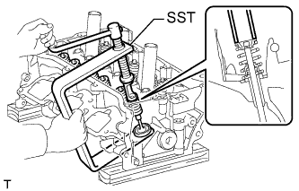
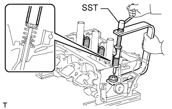
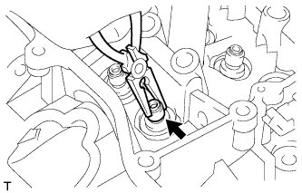
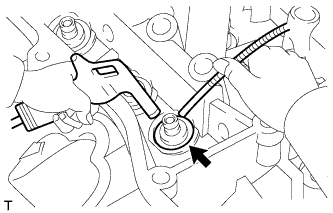
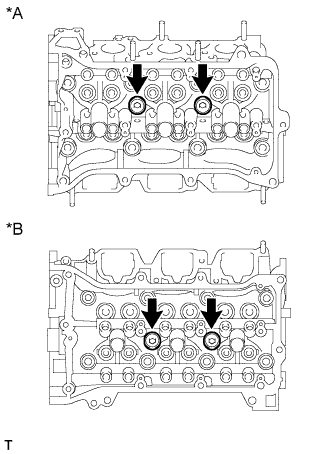
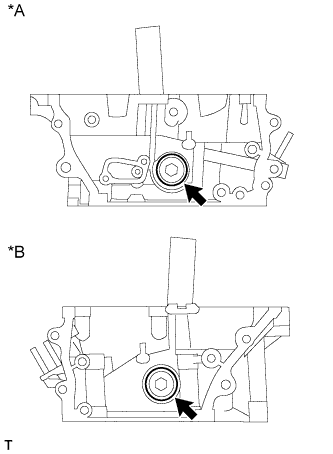

ГОЛОВКА БЛОКА ЦИЛИНДРОВ > РАЗБОРКА |
| 1. СНИМИТЕ ВПУСКНОЙ КЛАПАН |
|  |
С помощью специального инструмента сожмите внутреннюю пружину и снимите кулачки тарелки клапанной пружины.
Снимите внутреннюю пружину сжатия, тарелку клапанной пружины и впускной клапан.
| 2. СНИМИТЕ ВЫПУСКНОЙ КЛАПАН |
|  |
С помощью специального инструмента сожмите внутреннюю пружину и снимите кулачки тарелки клапанной пружины.
Снимите внутреннюю пружину сжатия, тарелку клапанной пружины и выпускной клапан.
| 3. СНИМИТЕ САЛЬНИК ШТОКА КЛАПАНА |
|  |
С помощью острогубцев снимите сальник штока клапана.
| 4. СНИМИТЕ ЧАШКУ ПРУЖИНЫ КЛАПАНА |
|  |
С помощью магнитного захвата извлеките чашки клапанных пружин, выдув их сжатым воздухом.
| 5. СНИМИТЕ РЕЗЬБОВУЮ ЗАГЛУШКУ № 1 |
|  |
С помощью шестигранного гаечного ключа на 10 мм отверните 4 резьбовые заглушки № 1 и снимите 4 прокладки.
| *A | Правая сторона |
| *B | Левая сторона |
| 6. СНИМИТЕ РЕЗЬБОВУЮ ЗАГЛУШКУ № 2 |
|  |
С помощью шестигранного гаечного ключа на 14 мм отверните 2 резьбовые заглушки № 2 и снимите 2 прокладки.
| *A | Правая сторона |
| *B | Левая сторона |
| 7. СНИМИТЕ РЕЗЬБОВУЮ ШПИЛЬКУ |